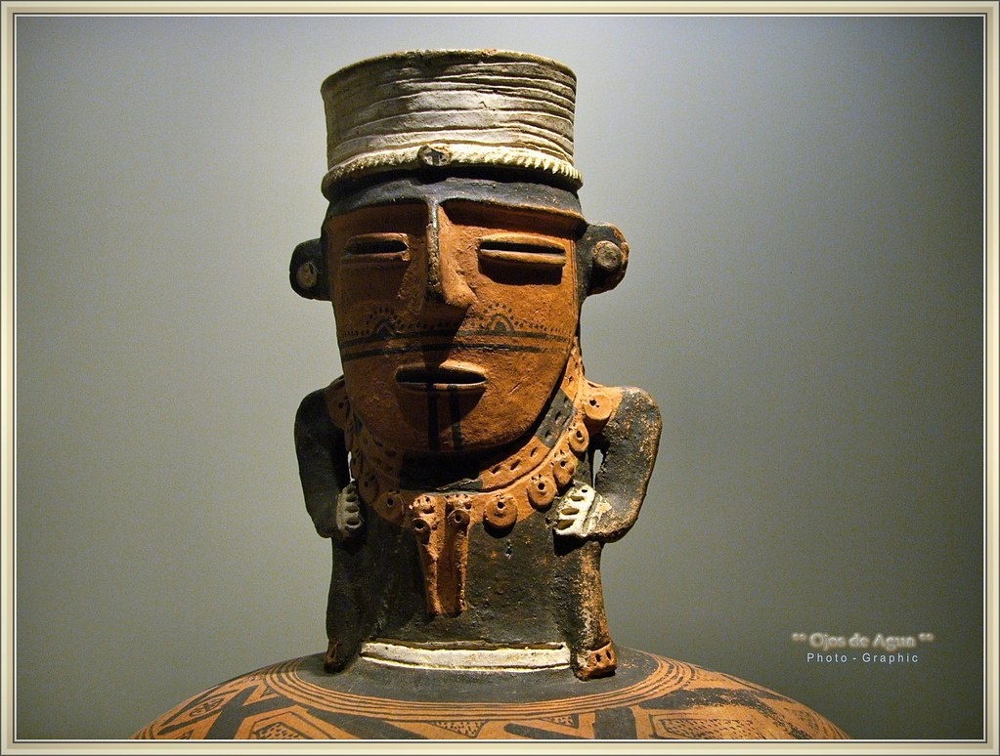
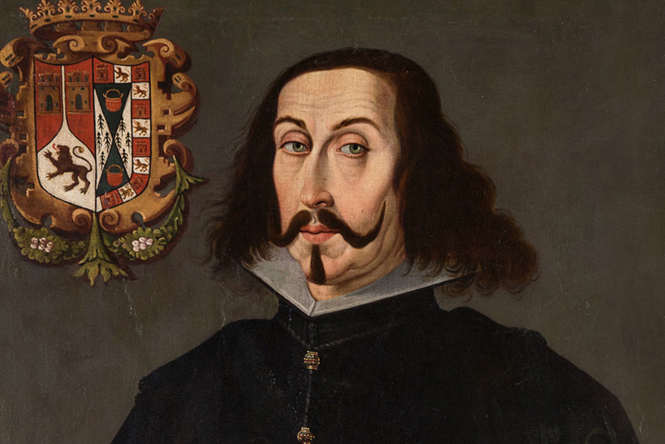
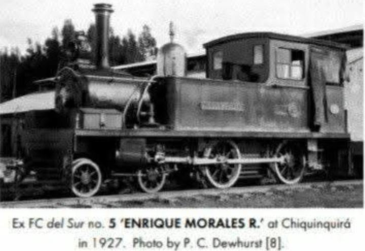

Origen y Territorio Muisca
El nombre Simijaca proviene del muysccubun 'Semijaca', que significa 'Sombra de Pico Colgado'. Territorio ancestral de caciques y agricultura.
Conoce los orígenes indígenas y la evolución histórica del territorio simijense a lo largo de los siglos.

El nombre Simijaca proviene del muysccubun 'Semijaca', que significa 'Sombra de Pico Colgado'. Territorio ancestral de caciques y agricultura.

Establecimiento del poblado hispánico en 1600 por el oidor Luis Enríquez, reorganizando los asentamientos indígenas locales.

Llegada del tren en el siglo XX, consolidando a Simijaca como uno de los polos agropecuarios e industriales más relevantes de la región.